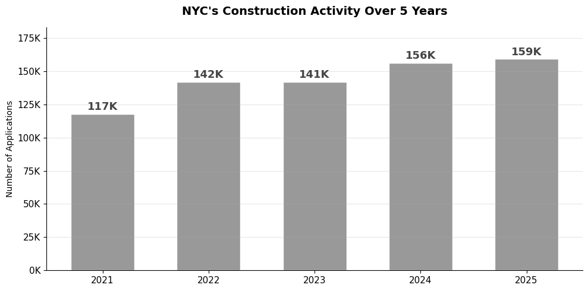
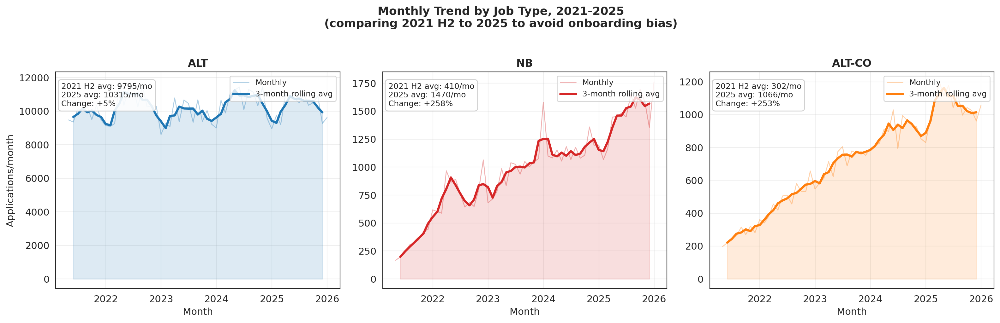
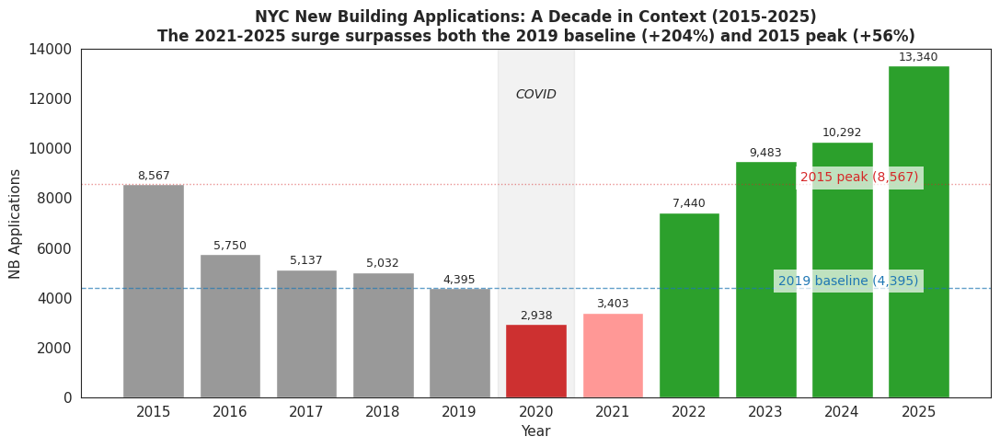
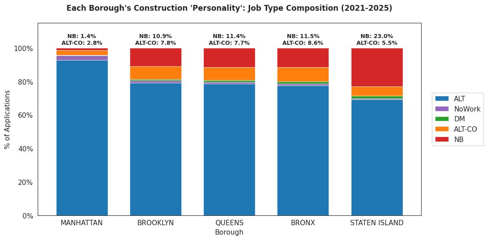
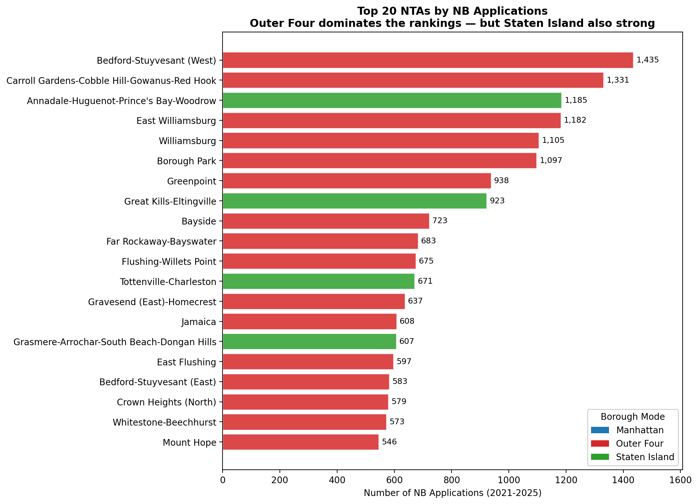

If you ask most people where new buildings go up in New York City, they say Manhattan. That intuition is wrong. Over the past five years, Manhattan has generated almost no new building activity. The neighborhoods where construction is genuinely expanding are Bushwick and Williamsburg in Brooklyn, Astoria in Queens, Mott Haven in the Bronx, and Tottenville at the southern tip of Staten Island.
Twenty neighborhoods have absorbed one-third of all new building permits filed across the entire city. If you want to see where New York is actually changing, take the L train to Bushwick, not the elevator to the Top of the Rock.
The surge in new construction is real, and it exceeds every historical benchmark
The dataset: 716,870 filings (DOB NOW only)
Our dataset draws primarily on the DOB NOW platform covering 2021–2025. The legacy Building Information System is only referenced later for historical comparison in Figure 1.3. Together, DOB NOW filings account for approximately 716,870 permit records spanning 2021 to 2025.

Annual totals appear stable at 140,000 to 160,000 filings per year. The aggregate figure conceals a dramatic shift in what type of construction is being filed.
Three job types, three completely different trajectories
At first glance, NYC construction activity looks unremarkable. But this aggregate stability conceals a dramatic compositional shift. The story is not in the total height of the bar chart. It is in what is happening inside each bar.
Standard renovations (labeled ALT) grew only 5 percent over five years. Functional conversions such as turning offices into apartments grew 253 percent, reflecting the adaptive reuse wave driven by post-pandemic vacancies. And new ground-up construction filed under the New Building category rose from roughly 410 monthly filings in mid-2021 to nearly 1,500 per month by 2025, an increase of 258 percent.

Three job types diverge sharply. Standard alterations are flat. Occupancy conversions climb steadily. New building permits take off entirely from 2022 onward.
New York is not building more of everything. It is building differently.
Not a rebound from the pandemic
One might wonder whether the surge simply reflects a low 2021 baseline caused by the pandemic. The record going back to 2015 rules this out. The 2015 construction peak reached 8,567 new building filings for the year. By 2019, that had already fallen to 4,395 as the construction market cooled through the latter half of the 2010s. The 2025 figure is 13,340 filings. That is 204 percent above 2019 and 56 percent above the prior decade's high. This is not a rebound. It is a genuine structural surge.
Two additional checks confirm the growth is real. First, the share of new building filings that progressed to active permits remained stable throughout the period, ruling out speculative paper filings inflating the count. Second, median gross square footage per filing is stable across years. This is not a flood of tiny projects. The count increase reflects more buildings, not smaller ones.

This figure draws on legacy Building Information System data for historical comparison. The 2025 annual volume surpasses both the 2019 pre-pandemic level by 204 percent and the 2015 decade peak by 56 percent.
Five boroughs, three construction personalities
When we plot the job-type composition of each borough, a clear typology emerges. Not five boroughs, but three fundamentally different construction environments.
| Borough | Mode | NB share | NB bar | Character |
|---|---|---|---|---|
| Manhattan | Renovation city | 1.4% | 93% alterations; almost no vacant land | |
| Brooklyn | Outer borough | ~10% | 80% alteration, 10% new building | |
| Queens | Outer borough | ~10% | Consistent outer-borough pattern | |
| Bronx | Outer borough | ~10% | Consistent outer-borough pattern | |
| Staten Island | Suburban frontier | 23% | Highest NB share in the five boroughs |

Five boroughs, three construction personalities. Manhattan is almost entirely renovation. Brooklyn, Queens, and the Bronx share a consistent outer-borough pattern. Staten Island stands apart with the highest new building share.
The surge is concentrated in specific outer-borough neighborhoods, and the pattern is deepening
We mapped all 716,870 filings at the Neighborhood Tabulation Area level, approximately 200 sub-borough geographies defined by NYC Planning. The results are almost the inverse of what common intuition would predict.
- Manhattan is almost entirely white. The borough that defines the city's famous skyline has generated almost no new building activity in five years.
- A deep red corridor runs through central Brooklyn. Bushwick, Bed-Stuy, and Williamsburg form a contiguous development band stretching inland from the waterfront.
- The northern Bronx shows a concentrated cluster. Mott Haven and neighboring communities have joined the surge in force.
- Staten Island's entire southern half has shifted. The Tottenville area represents the most visible suburban expansion across all five boroughs.
The interactive map
The map below shows new building filing intensity across all neighborhoods, colored by borough mode. The concentration in specific outer-borough communities is immediately visible when compared with the near-blank Manhattan panel.
Interactive map of new building filing density across all NTAs. Use the controls to explore how activity distributes across the three borough modes.
The top 20 neighborhoods
The ranking below shows where new building activity is most concentrated across NYC neighborhoods between 2021 and 2025. These areas account for a disproportionate share of total construction filings.

Brooklyn dominates the ranking. Bedford-Stuyvesant leads with 1,435 filings, followed by Carroll Gardens and Cobble Hill at 1,331. Four Staten Island communities appear in the top 20. Zero Manhattan neighborhoods appear.
How the surge spread: a quarterly animation
The quarterly animation of new building filings from 2021 through 2025 reveals two simultaneous mechanisms: a small set of pioneer neighborhoods sustained early activity while new neighborhoods continuously entered the surge.
New building filings animate quarter by quarter from 2021 through 2025. Pioneer neighborhoods in Brooklyn and Staten Island activate early; by mid-2023, the surge spreads broadly across the outer boroughs. Manhattan remains pale throughout.
New buildings and renovations occupy different cities
Left panel shows alteration activity concentrated in lower and midtown Manhattan. Right panel shows new building activity concentrated in the outer boroughs and Staten Island. The same areas that dominate one map are largely absent from the other. Use the timeline slider to explore how spatial patterns evolve over time.
Tip: Drag the timeline slider and focus on these three periods to see how development shifts across boroughs.
This spatial independence matters for how we interpret the surge. New building growth is not a byproduct of renovation activity. It has its own geographic logic, concentrated in places where land is available and construction economics work. That logic is what the third part of this analysis addresses.
Development potential explains the lot-level geography, but neighborhood context adds complexity
Data note: This section draws on the PLUTO (Primary Land Use Tax Lot Output) dataset, a city-level database that contains tax lot–level information on land use, zoning, and building characteristics across New York City.
If capital is rational, new buildings should concentrate on lots where there is room to build — where the permitted floor area exceeds what has already been constructed. We test this using development potential, calculated as the difference between a lot's permitted Floor Area Ratio (FAR) and its existing built FAR, using PLUTO data.
Lot-level analysis: the relationship is clear
We group all observed tax lots into ten development-potential deciles and measure new building activity within each group. Lots in the highest potential deciles show disproportionately elevated new building filing rates. Lots with little remaining capacity generate almost no new construction activity. The second chart compares the potential distributions of lots that received new building filings against those that did not. Lots with filings skew markedly toward higher potential values.
New building filing rates rise with development potential. The highest-potential lots show dramatically elevated activity compared with lower-potential lots.
Lots that received new building filings concentrate in higher development-potential values. The distributions are clearly different from the overall lot population.
Building age provides additional context
We supplement the FAR analysis with building vintage from the PLUTO yearbuilt field. Lots with older buildings, particularly those built before 1960, show elevated new building rates in the outer boroughs. The relationship is weaker than the FAR measure and does not hold uniformly. In Staten Island, new buildings often replace relatively recent suburban homes, suggesting that land capacity rather than building age is the more fundamental driver.
Older building stock correlates with elevated new building rates in the outer boroughs, though the relationship varies by borough mode.
The age profiles of lots with and without new building filings differ, but the gap is smaller than the development-potential measure and less consistent across boroughs.
Where the theory works and where it breaks down
Point size encodes NTA-level new building volume. Color encodes borough mode. NTAs with the most new building activity do not always correspond to those with the highest average development potential, particularly in Manhattan.
At the lot level, the correlation between development potential and new building activity is positive and statistically significant. When we aggregate to the neighborhood level, the correlation weakens to negative 0.114, which is negligible. This gap reveals something important about how the surge works in practice.
A neighborhood can contain many high-potential lots without generating many new building filings if those lots are held by long-term owners, or if local construction costs do not yet justify development. Conversely, a neighborhood with moderate average potential may show intense activity when a cluster of well-positioned lots coincides with strong demand.
Manhattan makes this point clearly. Its near-zero new building share is not explained by a lack of high-potential lots. Parts of upper Manhattan retain substantial unused FAR. Land cost, regulatory complexity, and high-rise construction economics constrain activity far more than raw zoning capacity does.
Staten Island shows the clearest alignment between theory and outcome. High new building intensity corresponds to both high development potential and comparatively low construction costs. It is the most straightforward expression of the development-potential hypothesis across all five boroughs.
New York is growing where capital finds room to build
The new building surge is real, significant, and spatially precise. It is not a pandemic rebound. It exceeds both the 2019 pre-pandemic baseline and the 2015 construction peak. It does not fall evenly across the city. It bypasses Manhattan almost entirely and concentrates in specific outer-borough neighborhoods and Staten Island's suburban south. And at the lot level, it tracks measurable development potential, reflecting the rational calculus of construction capital seeking land where there is room, workable economics, and accessible costs.
The 20 neighborhoods absorbing one-third of the city's new building activity are not the ones that dominate the real estate section. They are the neighborhoods reshaping New York's physical fabric in ways that will be visible for decades.